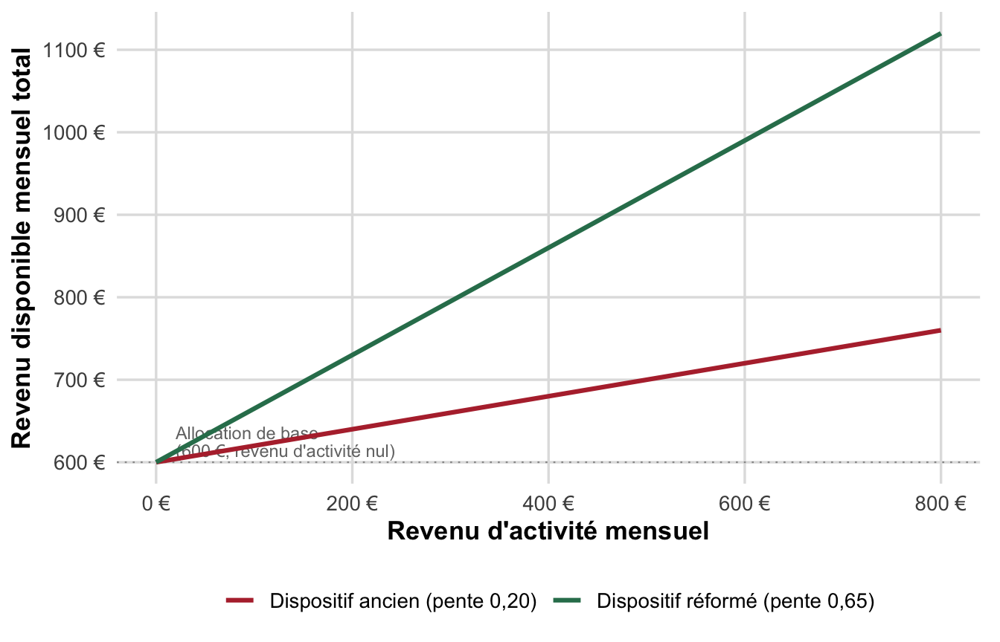
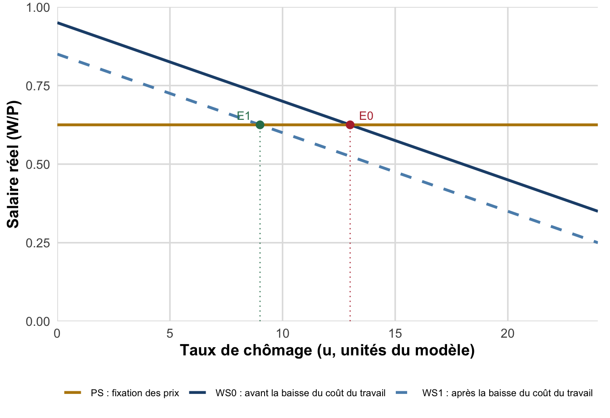

TD 8 : Contrôle continu blanc 2 (entraînement)
Flexisécurité, coût du travail et réformes du marché du travail en France
Sujet d’entraînement (2h) : QCM, lecture de graphique, exercice analytique WS-PS et question de réflexion sur la flexisécurité. Barème indicatif, réponses exemples incluses.
ImportantCe sujet est un entraînement
Ce document est un sujet d’ENTRAÎNEMENT (blanc). Ce n’est pas le sujet du contrôle continu noté : il sert à s’exercer au format et au niveau attendus pour le CC2. Les questions sont originales (elles ne reprennent pas le sujet réel de l’épreuve) mais couvrent le même programme et le même niveau de difficulté. Une réponse exemple est fournie après chaque question ou groupe de questions, dans un encadré repliable : essayez de répondre par écrit avant de la consulter.
Objectifs de cet entraînement
À l’issue de cet entraînement, vous devrez avoir démontré votre capacité à :
- Mobiliser le vocabulaire de la flexisécurité (triangle d’or, quatre formes de flexibilité, notions de sécurité, trappe à inactivité).
- Lire et interpréter un graphique portant sur une politique d’activation.
- Résoudre analytiquement un modèle WS-PS intégrant un choc de politique économique (baisse du coût du travail) et en tirer les implications.
- Construire une argumentation structurée (introduction, développement, conclusion) sur la place de la France dans la typologie des modèles de marché du travail.
Pré-requis : chapitre II §2.3 (modèle WS-PS, cours/chap2.qmd), chapitre III (flexisécurité, triangle d’or, chronologie des réformes françaises, cours/chap3.qmd), TD 3 (coût du travail), TD 5 (modèle WS-PS), TD 7 (trappe à inactivité).
NoteModalités indicatives (à titre d’entraînement)
- Durée conseillée : 2 heures, dans les conditions du contrôle continu.
- Documents : aucun document autorisé. Calculatrice autorisée.
- Répondez directement et lisiblement sur votre copie ; numérotez vos réponses en reprenant la numérotation du sujet (ex. « 3.c) »).
- Les développements doivent être justifiés : une réponse correcte non justifiée n’obtient pas la totalité des points.
- Soignez la rédaction des questions de réflexion (orthographe, syntaxe, structuration en paragraphes).
Barème indicatif
| Exercice | Intitulé | Points |
|---|---|---|
| 1 | QCM : Définitions | 4 |
| 2 | Lecture de graphique : la trappe à inactivité | 4 |
| 3 | Exercice analytique : Modèle WS-PS et politique de l’emploi | 7 |
| 4 | Question de réflexion : la France dans la typologie des modèles de marché du travail | 5 |
| Total | 20 |
Exercice 1 : QCM (4 points)
Pour chaque question, indiquez le numéro et la lettre correspondant à la bonne réponse. 0,5 point par question.
1. Le « triangle d’or » de la flexisécurité danoise combine trois piliers. Laquelle des combinaisons suivantes le résume correctement ?
- Forte protection de l’emploi + faible indemnisation + accompagnement faible.
- Faible protection de l’emploi + indemnisation chômage généreuse + politique active d’activation forte.
- Salaire minimum interprofessionnel élevé + faible protection de l’emploi + accompagnement faible.
- Forte protection de l’emploi + indemnisation généreuse + absence d’activation.
NoteRéponse exemple
Réponse : b. Le triangle d’or danois combine (i) une faible protection de l’emploi (licenciements aisés), (ii) une indemnisation chômage généreuse et (iii) une politique active d’activation forte (accompagnement, contrôle, formation). Les trois autres options associent au moins un pilier erroné (forte protection en a) et d), salaire minimum élevé en c), absence d’activation en d)) : le Danemark n’a d’ailleurs pas de salaire minimum légal, celui-ci résultant de la négociation collective de branche.
2. Une entreprise fait tourner ses salariés sur plusieurs postes et tâches selon les besoins de production (polyvalence, rotation des tâches). De quelle forme de flexibilité relève cette pratique ?
- Flexibilité numérique externe.
- Flexibilité numérique interne.
- Flexibilité fonctionnelle.
- Flexibilité salariale.
NoteRéponse exemple
Réponse : c. La flexibilité fonctionnelle (ou qualitative) exploite l’organisation du travail : polyvalence des salariés, rotation des tâches, réaffectation entre postes. Elle se distingue de la flexibilité numérique externe (ajustement de l’effectif par embauches/licenciements, intérim, CDD), de la flexibilité numérique interne (ajustement des heures travaillées : heures supplémentaires, activité partielle) et de la flexibilité salariale (sensibilité des salaires à la conjoncture).
3. Dans le modèle WS-PS, une hausse du pouvoir de négociation syndicale, toutes choses égales par ailleurs, se traduit par :
- Un déplacement vers le haut de la courbe WS, donc une hausse du salaire réel négocié à chaque niveau de chômage et une hausse du chômage d’équilibre.
- Un déplacement vers le bas de la courbe PS.
- Une baisse du taux de marge des entreprises.
- Aucun effet, car la courbe WS ne dépend pas du pouvoir de négociation.
NoteRéponse exemple
Réponse : a. La courbe WS (Wage Setting) résume le résultat du processus de négociation salariale : elle dépend, entre autres déterminants, du pouvoir de négociation des salariés. Un pouvoir syndical accru permet aux salariés d’obtenir un salaire réel plus élevé à chaque niveau de chômage : la courbe WS se déplace vers le haut. La courbe PS, elle, ne dépend que du taux de marge \(m\) et de la productivité \(\lambda\) (comportement de fixation des prix des entreprises) : elle n’est pas affectée par le pouvoir syndical (b et c sont donc fausses). Le nouvel équilibre se situe, le long de la courbe PS inchangée, à un chômage d’équilibre plus élevé.
4. Les ordonnances Macron de 2017 (plafonnement des indemnités prud’homales, primauté renforcée de l’accord d’entreprise sur la branche) relèvent principalement de quel axe de réforme du marché du travail français ?
- La baisse du coût du travail.
- La flexibilisation de l’emploi.
- L’activation des chômeurs.
- La politique monétaire.
NoteRéponse exemple
Réponse : b. Le plafonnement des indemnités prud’homales et le renforcement de la primauté de l’accord d’entreprise assouplissent les conditions d’embauche et de licenciement : ils relèvent de l’axe flexibilisation, et non de la baisse du coût du travail (a, qui concerne les cotisations et la fiscalité pesant sur les salaires) ni de l’activation (c, qui vise le retour à l’emploi des chômeurs et allocataires). La politique monétaire (d) est un instrument macroéconomique distinct des politiques de l’emploi.
5. La trappe à inactivité est d’autant plus marquée que :
- Le taux marginal de prélèvement implicite sur la reprise d’un emploi peu rémunéré est faible.
- Les prestations sociales diminuent rapidement à mesure que le revenu d’activité augmente, réduisant fortement le gain net associé à la reprise d’un emploi.
- Le salaire minimum est très supérieur au salaire médian.
- Le taux de chômage de longue durée est nul.
NoteRéponse exemple
Réponse : b. La trappe à inactivité désigne une situation où la reprise d’un emploi peu rémunéré n’améliore que faiblement le revenu disponible d’un allocataire, du fait de la réduction rapide des prestations sociales à mesure que le revenu d’activité augmente. Plus cette réduction est rapide (plus le taux marginal de prélèvement implicite est élevé, donc plus l’affirmation a, qui décrit l’inverse, est fausse), plus le gain net à la reprise d’emploi est faible et plus la trappe est marquée. Cette notion est indépendante du niveau du salaire minimum (c) ou du taux de chômage de longue durée (d).
6. Selon les résultats empiriques de Bassanini et Duval (2006) mobilisés en cours, la rigueur de la protection de l’emploi (EPL) a un effet :
- Fortement négatif sur l’emploi de toutes les classes d’âge.
- Non significatif sur l’emploi agrégé des 25-54 ans, mais différencié selon l’âge : défavorable à l’insertion des jeunes, plutôt favorable au maintien en emploi des salariés seniors.
- Positif et significatif sur l’emploi agrégé, quel que soit l’âge.
- Nul, quelle que soit la classe d’âge considérée.
NoteRéponse exemple
Réponse : b. Bassanini et Duval (2006) ne trouvent pas d’effet significatif de la protection de l’emploi sur le niveau d’emploi agrégé des salariés « cœur de carrière » (25-54 ans), mais un effet différencié selon l’âge : défavorable à l’insertion des jeunes (20-24 ans, pour qui une forte protection dissuade l’embauche), plutôt favorable au maintien en emploi des seniors (55-64 ans, pour qui elle limite les licenciements en fin de carrière). Les réponses a, c et d proposent toutes un effet uniforme selon l’âge, ce que l’étude ne confirme pas.
7. Le remplacement du RSA-activité par la prime d’activité en 2016 visait principalement à :
- Supprimer tout minimum social pour inciter au retour à l’emploi.
- Réduire le non-recours (taux de non-recours élevé au RSA-activité) et améliorer le taux de conservation du revenu d’activité repris.
- Augmenter le montant du salaire minimum interprofessionnel.
- Remplacer l’assurance chômage.
NoteRéponse exemple
Réponse : b. Le RSA-activité souffrait d’un taux de non-recours très élevé (de l’ordre de 60 à 70 % des ayants droit), en raison de sa complexité et de sa stigmatisation. La prime d’activité, plus simple et perçue comme moins stigmatisante, visait à réduire ce non-recours et à améliorer le taux de conservation du revenu d’activité repris, dans une logique d’activation : elle ne supprime pas les minima sociaux (a), n’a pas d’effet sur le SMIC (c) et ne remplace pas l’assurance chômage (d), qui reste un dispositif distinct.
8. La flexisécurité danoise privilégie surtout quelle forme de sécurité ?
- La sécurité de l’emploi (garder le même poste chez le même employeur).
- La sécurité de l’employabilité (retrouver rapidement un emploi, pas nécessairement chez le même employeur).
- La sécurité de conciliation (équilibre entre vie professionnelle et vie familiale).
- La sécurité des revenus, exclusivement, à l’exclusion de toute autre forme de sécurité.
NoteRéponse exemple
Réponse : b. Le principe directeur de la flexisécurité est de « protéger les personnes plutôt que les emplois » : ce n’est pas la conservation d’un poste donné (sécurité de l’emploi, a) qui est visée, mais la capacité à retrouver rapidement un emploi, éventuellement chez un autre employeur (sécurité de l’employabilité), grâce à l’indemnisation généreuse et à l’accompagnement du triangle d’or. La sécurité de conciliation (c) n’est pas la dimension centrale du modèle danois ; la sécurité des revenus (d) y contribue mais n’est pas exclusive, ni la seule sécurité mobilisée.
Exercice 2 : Lecture de graphique : la trappe à inactivité et sa correction (4 points)
Le pays fictif Nordavie verse à ses allocataires de minima sociaux une allocation de base de 600 € par mois lorsqu’ils n’ont aucun revenu d’activité. Deux dispositifs de cumul allocation/revenu d’activité sont comparés ci-dessous : un dispositif ancien, dans lequel l’allocataire ne conserve que 0,20 € par euro de revenu d’activité gagné (le reste étant déduit de l’allocation), et un dispositif réformé, plus incitatif, dans lequel il conserve 0,65 € par euro gagné.
Questions :
- Décrivez et comparez les deux courbes (pente, écart entre les deux dispositifs à mesure que le revenu d’activité augmente). (1 point)
- Calculez le taux marginal de prélèvement implicite (TMPI \(= 1 -\) pente) pour chaque dispositif, et expliquez pourquoi un TMPI élevé décourage la reprise d’un emploi peu rémunéré. (1,5 point)
- Reliez cette réforme à l’un des trois axes des politiques de l’emploi vus en cours (coût du travail / flexibilisation / activation), et expliquez pourquoi l’évaluation d’un tel dispositif doit aussi tenir compte du taux de recours (non-recours) pour juger de son efficacité réelle. (1,5 point)
NoteRéponse exemple
1. (1 point) Les deux courbes partent du même point (600 € lorsque le revenu d’activité est nul) mais divergent ensuite : le dispositif réformé (pente 0,65) monte beaucoup plus vite que le dispositif ancien (pente 0,20). L’écart entre les deux dispositifs se creuse mécaniquement à mesure que le revenu d’activité augmente : à 800 € de revenu d’activité, l’allocataire dispose de 760 € au total dans l’ancien dispositif contre 1 120 € dans le dispositif réformé, soit un écart de 360 €.
2. (1,5 point) Le taux marginal de prélèvement implicite mesure la part de chaque euro supplémentaire gagné qui est « reprise » par la baisse des prestations. TMPI \(=1-0{,}20=80\ \%\) pour le dispositif ancien : sur chaque euro gagné, l’allocataire n’en conserve que 20 centimes, 80 centimes étant retirés de son allocation. TMPI \(=1-0{,}65=35\ \%\) pour le dispositif réformé : l’allocataire conserve 65 centimes par euro gagné. Un TMPI élevé (proche de 100 %, comme dans le dispositif ancien) annule quasiment le gain financier associé à la reprise d’un emploi peu rémunéré : l’allocataire travaille alors « pour presque rien » en termes de revenu disponible additionnel, ce qui décourage la reprise d’activité, c’est la définition même de la trappe à inactivité.
3. (1,5 point) Cette réforme relève de l’axe activation : elle ne modifie ni le coût du travail supporté par l’employeur, ni les règles d’embauche/licenciement, mais cherche à rendre le retour à l’emploi plus incitatif pour l’allocataire, exactement comme la trajectoire française RSA → prime d’activité. Toutefois, un dispositif plus généreux en théorie n’améliore la situation réelle des allocataires que s’il est effectivement utilisé : un dispositif complexe à comprendre ou perçu comme stigmatisant peut souffrir d’un taux de non-recours élevé (comme ce fut le cas du RSA-activité), auquel cas l’essentiel de son effet incitatif reste virtuel. Juger de l’efficacité réelle d’une réforme d’activation suppose donc de croiser la générosité théorique du barème (la pente) avec le taux de recours effectif des ayants droit.
Exercice 3 : Exercice analytique : modèle WS-PS et politique de baisse du coût du travail (7 points)
On étudie une économie représentée par le modèle WS-PS, avec les équations suivantes :
\[ \text{WS}_0 : \frac{W}{P} = 0{,}95 - 0{,}025\,u \qquad\qquad \text{PS} : \frac{W}{P} = \frac{\lambda}{1+m} \]
où \(W/P\) est le salaire réel, \(u\) le taux de chômage (en unités du modèle), \(\lambda\) la productivité du travail et \(m\) le taux de marge des entreprises. On donne \(\lambda = 1\) et \(m = 0{,}60\).
a) Calculez le niveau de salaire réel donné par la courbe PS. Déduisez-en le taux de chômage d’équilibre \(u^{*}_0\) et le salaire réel d’équilibre initiaux. (1,5 point)
b) Sur votre copie, représentez graphiquement les courbes WS\(_0\) et PS dans un repère (taux de chômage en abscisse, salaire réel en ordonnée), et faites figurer l’équilibre initial. (1 point)
c) Le gouvernement met en place une baisse ciblée des cotisations patronales sur les bas salaires, équivalente pour les entreprises à une réduction du coût du travail de 0,10 point de salaire réel à chaque niveau de chômage. La nouvelle courbe de fixation des salaires s’écrit :
\[ \text{WS}_1 : \frac{W}{P} = 0{,}85 - 0{,}025\,u \]
Déterminez le nouveau taux de chômage d’équilibre \(u^{*}_1\) et le nouveau salaire réel d’équilibre. (1,5 point)
d) Comparez les deux équilibres. Que constatez-vous concernant le salaire réel d’équilibre ? Sur qui repose, en définitive, le bénéfice de cette politique dans le cadre théorique du modèle WS-PS ? (1,5 point)
e) Si cette baisse de cotisations patronales est financée par une hausse de la TVA ou par une baisse de la dépense publique, quel canal macroéconomique, vu au chapitre I dans le modèle OA-DA, pourrait venir limiter l’effet positif sur l’emploi obtenu en c) ? (1,5 point)
NoteRéponse exemple
a) Salaire réel et chômage d’équilibre initiaux (1,5 point).
\[ PS = \frac{\lambda}{1+m} = \frac{1}{1{,}60} = 0{,}625 \]
En résolvant \(0{,}95 - 0{,}025\,u^{*}_0 = 0{,}625\) :
\[ 0{,}025\,u^{*}_0 = 0{,}325 \;\Rightarrow\; u^{*}_0 = 13 \]
Le taux de chômage d’équilibre initial est \(u^{*}_0 = 13\) (en unités du modèle) et le salaire réel d’équilibre \(\left(W/P\right)^{*}_0 = 0{,}625\).
b) Représentation graphique (1 point). La figure ci-dessous (référence pour la correction, à reproduire à main levée sur la copie) représente la courbe WS\(_0\), décroissante, et la courbe PS, horizontale au niveau \(0{,}625\). L’équilibre initial \(E_0\) se situe à leur intersection, en \((u, W/P) = (13\,;\,0{,}625)\).

c) Nouvel équilibre après la baisse du coût du travail (1,5 point).
\[ 0{,}85 - 0{,}025\,u^{*}_1 = 0{,}625 \;\Rightarrow\; 0{,}025\,u^{*}_1 = 0{,}225 \;\Rightarrow\; u^{*}_1 = 9 \]
Le nouveau taux de chômage d’équilibre est \(u^{*}_1 = 9\), soit une baisse de 4 points (\(\Delta u^{*} = u^{*}_1 - u^{*}_0 = -4\)). Le salaire réel d’équilibre reste \(\left(W/P\right)^{*}_1 = 0{,}625\), inchangé.
d) Interprétation économique (1,5 point). Le salaire réel d’équilibre est entièrement déterminé par la courbe PS (donc par le taux de marge \(m\) et la productivité \(\lambda\)), qui n’est pas affectée par la baisse de cotisations. La mesure ne se traduit donc pas par une hausse du salaire réel perçu par les salariés déjà en emploi : elle se traduit intégralement par une baisse du chômage d’équilibre. Dans ce cadre théorique, le bénéfice de la politique revient donc aux personnes qui, grâce à la mesure, passent du chômage à l’emploi, pas à une hausse du salaire réel des salariés déjà en poste, ni à une hausse pérenne des marges des entreprises (le supplément de compétitivité se traduit intégralement par de l’emploi supplémentaire, à taux de marge \(m\) inchangé).
e) Limite tenant au financement (1,5 point). Le modèle WS-PS de base est un modèle d’offre, statique, qui ne représente pas le mode de financement de la mesure. Si la baisse de cotisations patronales est financée par une hausse de la TVA ou une baisse de la dépense publique, cela réduit le revenu disponible des ménages et/ou la demande publique adressée aux entreprises : dans le cadre du modèle OA-DA du chapitre I, il s’agit d’un choc de demande négatif, qui déplace la courbe \(DA\) vers la gauche et pèse sur la production et l’emploi, à l’opposé du choc d’offre positif que représente la baisse du coût du travail. Le résultat « \(u^{*}\) baisse sans coût pour le salaire réel » obtenu en c) et d) n’est donc valable qu’à demande globale inchangée : si le financement de la mesure comprime suffisamment la demande, l’effet net sur l’emploi peut être sensiblement plus faible que ne le suggère le seul modèle WS-PS statique, une fois le choc de demande négatif pris en compte.
AvertissementPiège fréquent
Beaucoup de copies confondent le déplacement de WS avec un déplacement de PS, ou concluent à tort que la baisse du chômage d’équilibre s’accompagne d’une baisse du salaire réel : dans ce modèle, c’est l’inverse : le salaire réel d’équilibre est fixé par PS, indépendamment du niveau de WS ; seul \(u^{*}\) varie avec les déplacements de WS. Vérifiez toujours l’ordonnée à l’intersection avant de conclure sur le salaire réel.
Exercice 4 : Question de réflexion (5 points)
NoteSujet
Les réformes françaises du marché du travail depuis les ordonnances Macron (2017) rapprochent-elles la France du modèle de flexisécurité danois, ou plutôt d’un modèle de flexibilité à l’anglo-saxonne ?
Vous répondrez à cette question sous la forme d’un développement structuré (introduction problématisée, deux parties, conclusion, une trentaine de lignes environ), en vous appuyant notamment sur :
- la typologie des trois modèles de marché du travail (flexibilité, sécurité, flexisécurité) et le triangle d’or danois ;
- des éléments de comparaison chiffrée entre la France et le Danemark (protection de l’emploi, dépenses de politiques actives) vus en cours ;
- le bilan des réformes françaises récentes (loi de sécurisation de l’emploi de 2013, ordonnances Macron de 2017, réforme de l’assurance chômage 2023-2024).
NoteRéponse exemple
Barème indicatif
| Critère | Points |
|---|---|
| Introduction problématisée et plan apparent (2 parties + conclusion) | 1 |
| Mobilisation correcte de la typologie des trois modèles et du triangle d’or | 1,5 |
| Éléments de comparaison chiffrée France/Danemark (protection de l’emploi, dépenses ALMP) | 1 |
| Bilan critique des réformes françaises récentes au regard des trois axes | 1 |
| Qualité rédactionnelle (syntaxe, paragraphes, absence de style télégraphique) | 0,5 |
Élément de corrigé.
Introduction. La typologie usuelle distingue trois modèles de marché du travail : la flexibilité anglo-saxonne (faible protection, faible indemnisation, faible accompagnement), la sécurité de l’Europe continentale, dont la France (forte protection, indemnisation généreuse, accompagnement limité), et la flexisécurité nordique, dont le Danemark (faible protection, indemnisation généreuse et conditionnelle, accompagnement fort), résumée par le « triangle d’or ». Depuis les ordonnances Macron de 2017, la France a multiplié les réformes de flexibilisation. La question posée est de savoir si ces réformes rapprochent la France du triptyque équilibré danois, ou plutôt d’un modèle de flexibilité pure, plus proche du modèle anglo-saxon.
I. Des réformes qui flexibilisent nettement le marché du travail français. Les ordonnances Macron (plafonnement des indemnités prud’homales, primauté de l’accord d’entreprise sur la branche, fusion des instances représentatives du personnel) réduisent la protection de l’emploi de façon significative. Sur l’indicateur OCDE de protection de l’emploi, la France reste toutefois nettement au-dessus du Danemark et du Royaume-Uni, en particulier sur les dispositions relatives aux licenciements collectifs : la flexibilisation française reste donc partielle au regard du « faible » niveau de protection qui caractérise le Danemark. La réforme de l’assurance chômage de 2023-2024, avec sa modulation contracyclique de la durée d’indemnisation, introduit un début de logique d’indemnisation conditionnelle proche, dans son principe, de la philosophie danoise.
II. Mais un volet « sécurité » et « activation » qui reste loin du niveau danois. Le triangle d’or danois n’est pas qu’une affaire de règles juridiques : il est financé par des dépenses de politiques actives de l’emploi représentant plus de 1,5 % du PIB au Danemark, contre moins de 0,8 % en France, soit un rapport de près de un à deux. Sans cet effort budgétaire massif d’accompagnement et de formation, une flexibilisation des règles de licenciement, sans contrepartie de sécurité et d’activation à due proportion, rapproche davantage la France d’une logique de flexibilité asymétrique (les entreprises gagnent en souplesse, les travailleurs ne gagnent pas la même sécurité de l’employabilité) que du triptyque équilibré danois. La loi de sécurisation de l’emploi de 2013 avait pourtant ouvert la voie à une logique de compromis (portabilité de certains droits, accords de maintien dans l’emploi), mais cette dynamique n’a pas été prolongée à la hauteur de l’effort danois.
Conclusion. Les réformes françaises depuis 2017 ont indéniablement flexibilisé le marché du travail, mais sans construire, en contrepartie, un système d’indemnisation et d’accompagnement comparable en générosité et en moyens à celui du Danemark. La France se situe donc aujourd’hui dans une position intermédiaire, plus proche d’une flexibilisation partielle inspirée du modèle anglo-saxon que d’une authentique flexisécurité à la danoise, faute d’un investissement budgétaire équivalent dans le volet « sécurité » et « activation » du triangle d’or.
AvertissementPiège fréquent
Une réponse purement descriptive (« voici les trois modèles », « voici les réformes ») sans prise de position argumentée sur la question posée ne peut obtenir la totalité des points, même si les connaissances mobilisées sont correctes. Une bonne copie hiérarchise les arguments (ici : flexibilisation réelle mais volet sécurité/activation resté en retrait) plutôt que de les juxtaposer.
Pour aller plus loin
AstucePour aller plus loin
- J. Gautié (2007), « La flexisécurité : nouvel horizon du modèle social français ? », ac26c.pdf, ses.ens-lyon.fr : l’article de référence sur les conditions institutionnelles (syndicalisation, formation, cohésion sociale) du succès danois.
- A. Chéron (2016), « Flexibilité et emploi : que disent les économistes ? », Cahiers français n°394 : synthèse des effets ambigus de la flexibilité sur l’emploi selon l’âge et le cycle économique.
- DARES (2016), Prestations sociales et trappe à inactivité : pour approfondir le mécanisme testé dans l’exercice 2.
- Vidéo de présentation de la loi de sécurisation de l’emploi (2013) : youtube.com/watch?v=S0EZrhIb7kc
- Econoclaste, « Les ordonnances réformant le code du travail et le cadre d’analyse économique » : synthèse critique des ordonnances Macron (2017).
- Les réponses exemples figurent directement sous chaque question (blocs « Réponse exemple » repliables). Le barème indicatif est rappelé au fil du sujet.